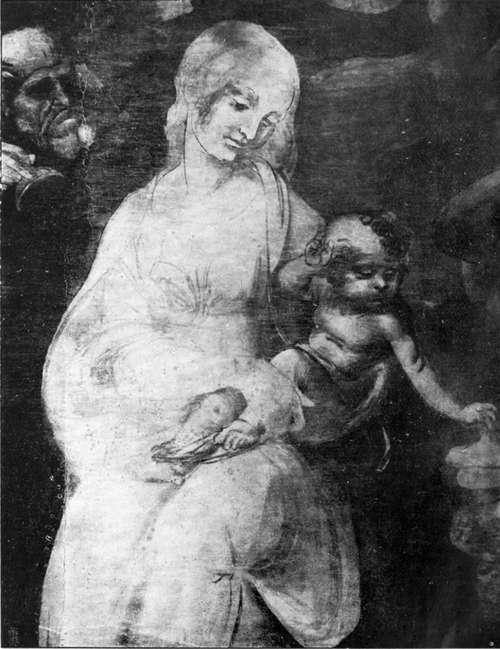
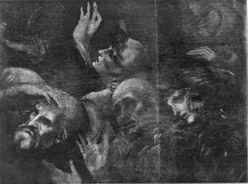

The Records, 1494-1519. Part 2
Description
This section is from the book "Leonardo Da Vinci", by Edward McCurdy. Also available from Amazon: Leonardo Da Vinci.
The Records, 1494-1519. Part 2
Similarly it is impossible to accept the colossal figure of Mercury or Argus in the Sala del Tesoro as a work by Leonardo. The destruction of the head renders the question of its authorship somewhat conjectural and relatively unimportant, but it may be compared with the Uomo dello Spadone, Brera (532), and the other frescoes from the Sala dei Baroni of the Casa Prinetti which are attributed to Bramante. It is entirely like them in the rigidity and curiously overwrought tension of muscle which seem to show the hand of one accustomed to produce his effects with materials less pliant than are those of the painter.
There is no evidence that Leonardo ever executed any figure composition in the castle. Whatever he was engaged upon in 1496 was put an end to by the quarrel with the Duke. In 1498 he does not seem to have done more than devise schemes of decoration.
In the intervening period he was occupied with the painting of the Last Supper. The Duke had apparently a voice in the agreement, and his resentment against the painter is clearly indicated by the terms of a memorandum to his secretary, Marchesino Stanga, of June 29th, 1497: "to urge Leonardo the Florentine to finish the work in the Refectory of the Grazie which he has begun, so that he may then get to work upon the opposite wall of the said Refectory, and to go through with him the articles of the agreement which he has signed, which oblige him to complete it in the time which has been specified."
This agreement has disappeared; the chronological records of the commission for the Last Supper consist in this memorandum, and in an entry dated 1497 in a book of notes by the architect of the Convent of a payment for making a window in the Refectory " where Leonardo was painting the Apostles." The terms of Fra Luca Pacioli's reference in the dedication of" De Divina Proportione" are such as to show that it was then, i.e., on February 9th, 1498, on the point of completion if not actually completed.
Plate 11. The Adoration Of The Magi (detail)
Alinari photo - Uffizi Gallery, Florence
The reference to work to be undertaken by Leonardo on the opposite wall of the Refectory must be to the portraits of the Sforza family painted at either side of the fresco of the Crucifixion by Montorfano. The fresco was completed and signed in 1495. The portraits are the addition of a later hand. Both Vasari and Lomazzo ascribe them to Leonardo, the former stating that they were painted when he was at work on the Cenacolo.
The Padre Gattico, in his MS. history of the Convent, says that Leonardo undertook the portraits unwillingly, painting them in oils at the insistence of the Duke against his own judgment: at the beginning of the seventeenth century, when the Padre wrote, they had already decayed away.1
Bossi holds them to have been in execution the work of a pupil, which would be the natural upshot of Leonardo's reluctance to blend his work with that of the older painter.
The ruin of the figures is so complete that it is impossible to judge of their original condition, but the vestiges that remain have no suggestion of Leonardo. Colour and modelling have disappeared. The miniaturelike elaboration of detail of the Duchess's brocaded robe, the dwarf-like children, the stiff angularity of outline, suggest that the painter belonged to the earlier Lombard School before becoming Leonardo's assistant. The grouping of the four figures and such details as are still visible resemble the portraits in the Brera altar-piece attributed formerly to Zenale, then by Morelli to Bernardino de' Conti, and now described officially, as " a picture of the transition from the old Lombard School to that of Leonardo."
1 Uzielli (1896), p. 192.
Ludovic's memorandum only shows that he wished Leonardo to undertake the work. There were some steps between this and performance.
Did Leonardo, then, ever paint the portraits either of Ludovic or Beatrice d'Este? All the answer possible is that there is no documentary evidence of his having done so, and there is no portrait of either in existence in the better-known collections which can be accepted as his work. Whoever the profile portrait in the Ambrosiana may represent-whether a princess of the house of Sforza or no-it is certainly not the work of Leonardo, but of Ambrogio de Predis, as Morelli has shown by examination of characteristic details.
That Leonardo never painted Beatrice d'Este, or that at any rate no such picture existed in Milan a year after her death, is also to be inferred from the fact that in 1497 her sister Isabella, desiring to see some specimen of Leonardo's art, wrote to Cecilia Gallerani for the loan of her portrait. This suggests a possible reason why the picture of Beatrice never was painted. Leonardo painted Cecilia Gallerani and Lucrezia Crivelli. The young Duchess, who, as the Ferrarese orator reported to his master, refused to wear a vest of woven gold, the gift of her husband, if Cecilia Gallerani ever wore a similar one which the Duke had given her, saw in Leonardo the painter of her husband's mistresses.
These two portraits are the only other compositions dating from the period of his residence in Milan to which contemporary documents refer, except the commission for the monks of S. Francesco, which is the subject of an undated petition to the Duke discussed further on in relation to the picture.
The Adoration Of The Magi (detail)
Anderson photo
Uffisi Gallery, Florence
In response to the request of the Marchioness Isabella, Cecilia Gallerani, who had been married to Count Ber-gamini, sent her portrait to Mantua with a prettily worded letter, saying that she would send it with even greater pleasure if it were more like her, begging the Marchioness, however, not to suppose that this is the fault of the master, for indeed she does not think that there lives his equal in the world, but the portrait was painted when she was quite young, and since then she has changed so much in features that no one would recognize that it was meant for her.1 The letter is dated April 29th, 1498. The picture must have been painted previously to September, 1492, the year of the death of Bernardo Bellincioni, who has described it in a sonnet, " Sopra il retracto de Madona Cecilia qual fece Maestro Leonardo."
Continue to:
Tags
leonardo da vinci, pictures, drawings, galleries, statues, da vinci